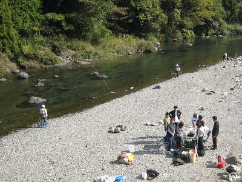
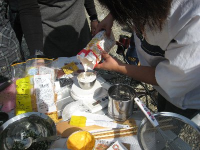
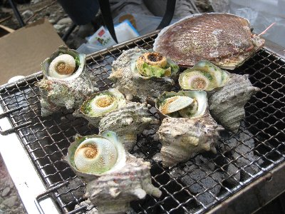
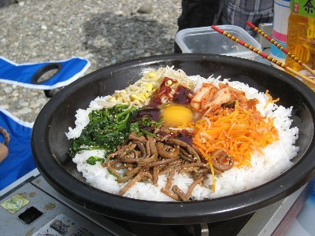
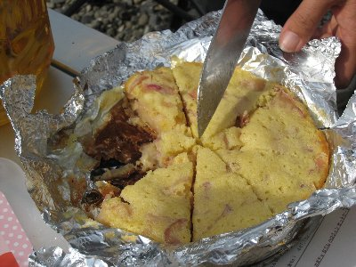
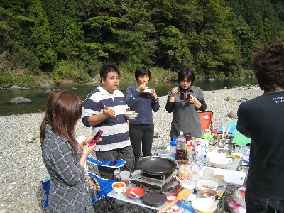
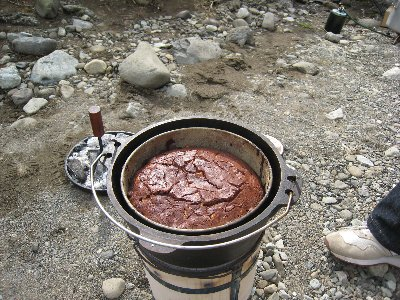

ダッチオーブン料理会 | 2008年11月 幹事：かむい |
|---|---|
ダッチオーブンとは、重い鉄鍋（鋳鉄）です。肉厚な鉄が、熱をじんわ〜りと鍋全体に行き渡らせるため、とっても美味しい料理が出来ます。蓋をするとオーブン料理も出来ちゃう優れものです。 今回は、ちょっと寒くなってきた野外で、美味しい料理を頂こうと、14名もの食いしん坊が集まりました。 メイン料理は、「鶏肉のプロヴァンス風煮込み（以下鍋と表記）」と「りんごのケーキ」、ですが、参加者が色々と食材を持ち込んで頂き、一日食べ尽くしって感じでした。 11月にもなると、夏はバーベキューで賑わう河原も釣り人しか居なくなり、天気も良くて寒くなく、絶好の野外料理日和です。 | |
|  こんな場所でやりました |  ケーキの分量はしっかり測ります |
| まずは材料切りと、火起こしをはじめます。炭の火起こしが、なかなか出来なく苦労しました。その間にサムちゃんが、持ち込み材料のサザエで、なにやら調理しています。こちらも炭火でやるようですが期待大ですね。こちらの火起こしは「火起こし達人」で簡単そう。下の台も折りたためて実に便利！「尾上製作所 フォールディング バーベキューコンロ」。う〜ん、欲しい！ | |
 取りあえずダッチ2つの図 |  サムちゃんからの差し入れ♪ |
| 鍋材料をダッチに入れていきます。次にケーキ作りを開始。リンゴを切ったりチョコレートを溶かし、練り混ぜ、粉をふるっています。そうこうしているうちに、サムちゃんの「サザエのつぼ焼きエスカルゴ風」が完成しました！ 美味い！ 鍋はいぜんとして煮込み期間。トマト缶を入れて美味しそうな色になってきました。ケーキも焼きに入ります。と、材料を切っていたテーブルを見ると、さるまるさんが持ち込み石焼ビビンバを作ってます。いやいや、これも美味しそう〜♪ この変わった鍋がまた凄そうです。「ふっくらさん」と言うみたいですね。ウチはＩＨだから出来ないけど、良いな〜〜 | |
|  ビビンバです！見れば分かるって？ |  こんがりトースト |
| 美味しいビビンバを食べていると、鍋にチーズを投入。Yottaさんが国内産麦で作ってきたという白パンをいただきます。柔らかくってモチモチして美味しい〜〜！ 自分でここまで作れるとは、やりますな。ぜひパン作り教室を開催して欲しいものです。 おっと、最初のケーキが出来たようです。りんごのケーキです。ちゃんと切り分けて・・・・って、誰ですか、多く食べちゃった人は！ （笑 鶏肉のプロヴァンス風煮込み完成〜 これまたトローリとして美味しい〜 いや、野外で食べているから美味しいって訳じゃないと思いますよ。どれも、ほんとに美味しいです。フランスパンのガーリックトーストも、上がじゅわ〜と、パンはカリッとして美味しい〜。これ、タダのガーリックじゃ無いですよね？ そしてチョコブラウニーも完成！ 幸せ一杯です♪ とどめに焼きリンゴを頂き、ホント食い尽くしの一日でした。 | |
|  一個目のケーキ♪ |  よく見たら鍋の写真ってコレしかなかった！（後は動画） |
| 本日のメニュー ・ガーリックトースト ・鶏肉のプロヴァンス風煮込み ・りんごのケーキ ・チョコブラウニー ・石焼ビビンバ ・フレンチトースト ・焼リンゴ ・サザエのつぼ焼きエスカルゴ風 ・石焼きビビンバ | |
|  椅子にも座らず立ち食いです |  チョコブラウニー |
| なんか食べ物の写真ばかりになってしまいました〜 写真＆コメント ｂｙ べっしー | |